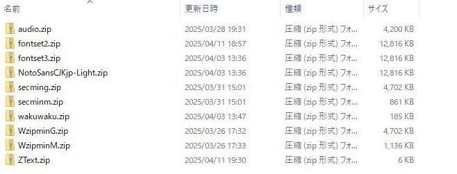
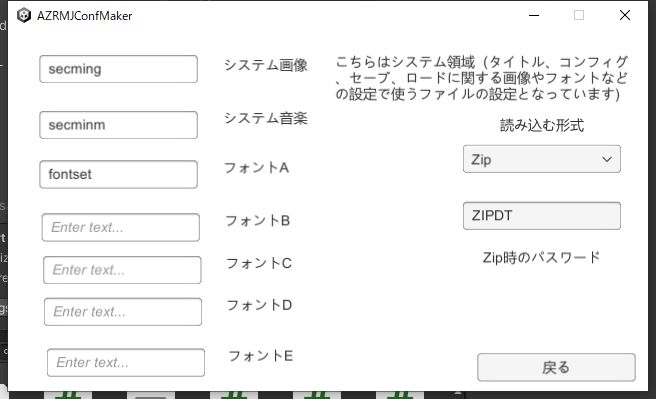
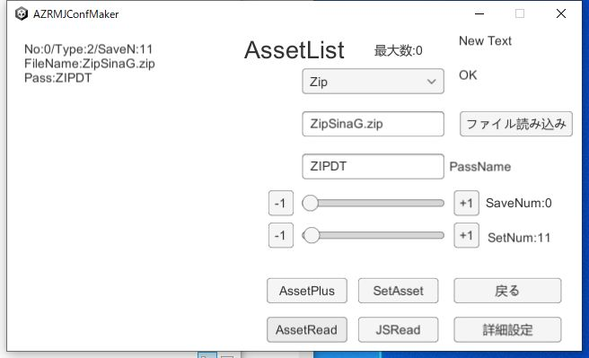
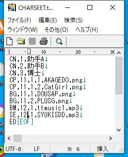

|
前回、WebGLでの起動をやりましたが、今回はWindows+PassZipでの起動をやります PassZipの場合、必要なファイルの圧縮方法がZipで、パスワードをかけて圧縮します。 主にWindowsでの起動を想定した圧縮で、この方法の場合、中身の絵や音楽などを見る際にはパスワードを解凍する必要があるので、 ウィンドウズのような環境下でも、多少中身を見えづらくすることが出来ます まずは必要なファイルを纏めて、Zipファイルにします。その際適当なパスワードをかけて圧縮してください 保存した物は一通りStreamに入れます |  |
|
圧縮が終わったら、コンフィグメーカーを起動します Asset設定で読み込む形式をZipにします。 また、Zip時のパスワードを設定します |  |
|
AssetList側に行きます。 使うファイルをZipにして、Zipファイルを読み込みます。 パスワードは圧縮する際に使ったパスワードにします。 |  |
|
キャラクターリストもAssetの時と同じように設定します |  |